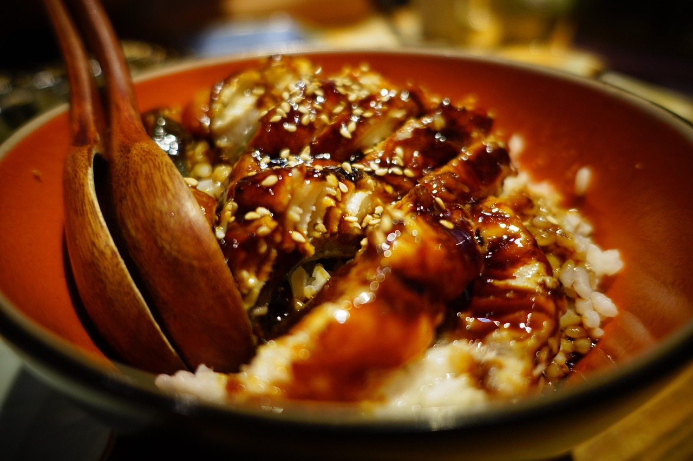
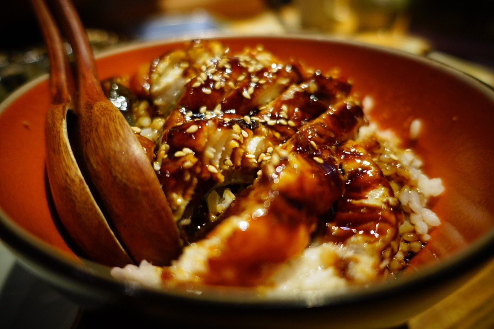

L’art de la gastronomia japonesa
El sushi és un dels plats més icònics de la cuina japonesa. Originari del Japó, s'ha convertit en un menjar reconegut arreu del món.
Els ingredients bàsics del sushi inclouen arròs amb vinagre de poma, peix cru com el salmó o la tonyina, algues nori...
Actualment, el sushi s'ha expandit a escala global amb variacions modernes com els makis, els nigiris, els sashimis i els rolls californians, adaptant-se a diferents gustos i cultures.
Varietats de Sushi

 
